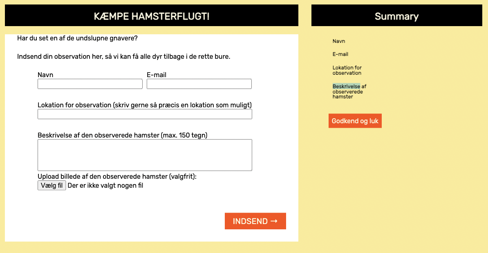
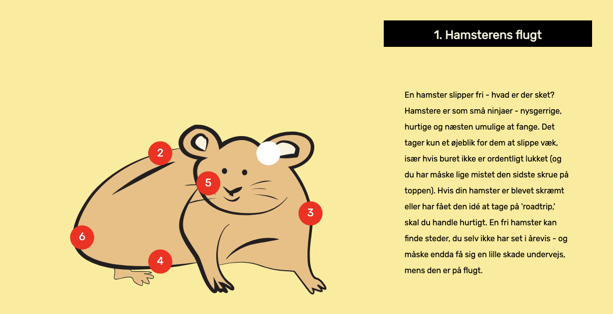
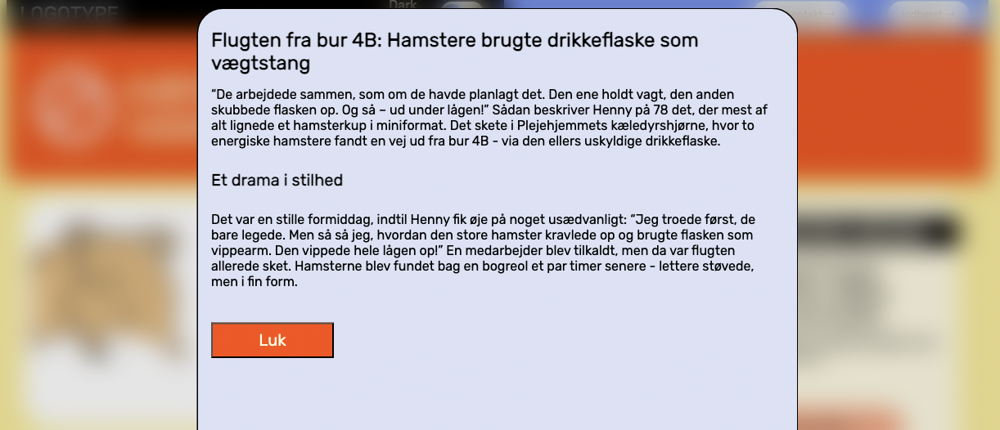

Emergency site
Tema 4 - Grundlæggende animation
På dette tema har jeg udvikle et website indenfor temaet 'Emergency', hvor jeg selv har skullet finde på selve emne og tema, men det visuelle udtryk har været fast defineret. Derudover blev jeg introduceret til JavaScript i form af popup/modals og webforms. Derudover har jeg arbejdet med en infografik, lavet i Adobe Illustrator med vektorgrafik. På dette tema har jeg også arbejdet med indhold generet af AI og ChatGPT, herunder tekst og billeder.
Webform
Infografik
Popup
I dette tema er jeg også blevet introduceret til JavaScript og temaet har givet mig en grundlæggende og praksisnær forståelse for, hvordan JavaScript kan anvendes til levende levende og engagerende websites. Jeg har arbejdet med hele udviklingsprocessen - fra idé og skitsering til kodning og implementering - og oplevet, hvordan interaktive elementer kan forstærke både brugeroplevelsen og budskabet. Her er der et eksempel på JavaScript er brugt til at lave dark mode på sitet
Hvis du er interesseret i at se hele sitet, så klik her.